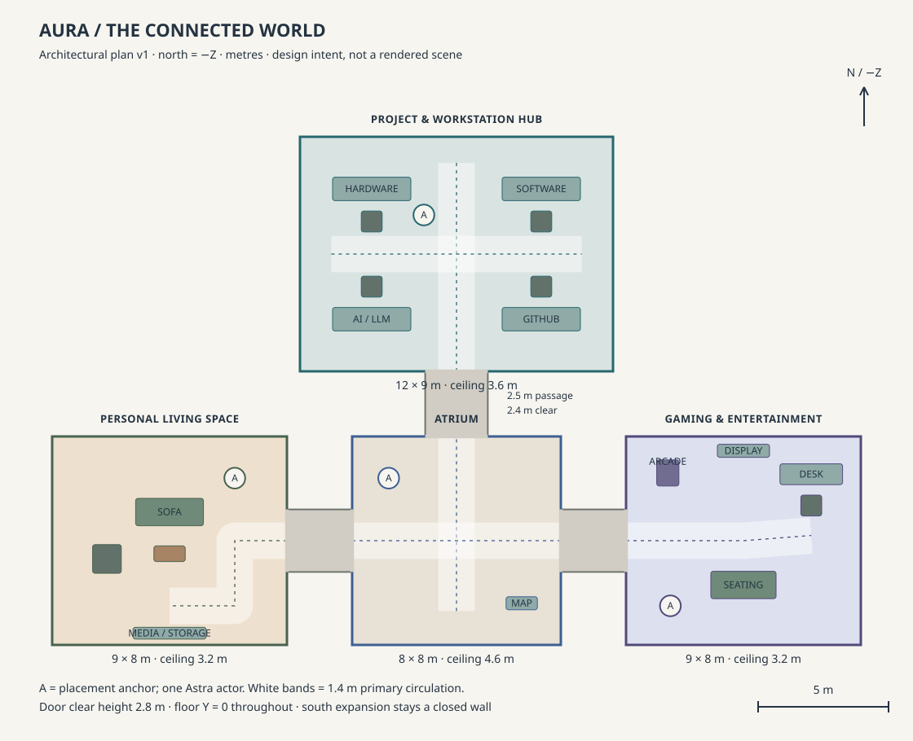

Atrium
Orientation and pause.
Honed stone / thin metal / deep glass reveals
A tall clerestory and clear crossing frame three entrances. Cobalt inlays guide without luminous tunnels.
One connected world.
Three places to make, think and unwind.
Stone and glass at the crossing. Graphite and copper at the desk. Walnut and forest fabric at home. Indigo and controlled colour at play.
Art-direction document. The plan and colour swatches describe intended dimensions and materials. They are not screenshots of implemented rooms, acquired models, or measured lighting.
Metres · north = −Z · common floor datum

sRGB colour intentions · evaluate under the actual renderer
Orientation and pause.
Honed stone / thin metal / deep glass reveals
A tall clerestory and clear crossing frame three entrances. Cobalt inlays guide without luminous tunnels.
Precise, industrious, warm.
Machined edges / acoustic felt / worked timber
Four recognizable workstations share a room. Inspectable hardware and actual project state earn the detail.
Sheltered, tactile, personal.
Shaped cushions / wood grain / soft woven cloth
A low composition, warm rug and north window. A few authored objects rather than shelves full of filler.
Intimate, focused, energetic.
Dark timber / fabric / restrained screen light
Recognizable arcade and console silhouettes. The real launcher leads; game availability stays truthful.
One sRGB / linear / ACES workflow. Shared exposure. No base requirement for bloom, transmission or extra postprocessing. Material response and silhouette come first.
One actor, explicit placement, no invented walking clip. Clear keyboard map and inspect alternatives. Reduced motion removes spatial easing and nonessential movement.